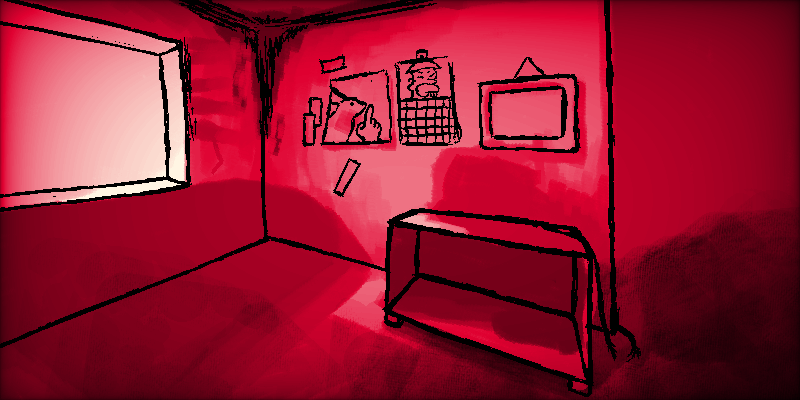
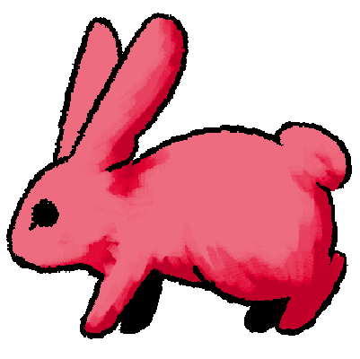

La búsqueda de los conejos
El juego propone una dinámica de búsqueda de objetos, en la que el jugador deberá encontrar a todos los conejos escondidos dentro de un escenario antes de que se agote el tiempo.


Este proyecto consiste en presentar una experiencia interactiva inspirada en el cuento "Carta a
una señorita en Paris", del escritor Julio Cortazar.
A través de un juego digital
creado en p5.js,
buscamos representar algunos elementos más característicos de la historia y transformarlos en una
experiencia única para el usuario.
El juego propone una dinámica de búsqueda de objetos, en la que el jugador deberá encontrar a todos los conejos escondidos dentro de un escenario antes de que se agote el tiempo.

El cuento "Carta a una señorita en Paris" fue escrito por Julio Cortázar y publicado en 1951. La historia narra la experiencia de un hombre que tiene una condición extraña: Cada tanto vomita conejos.